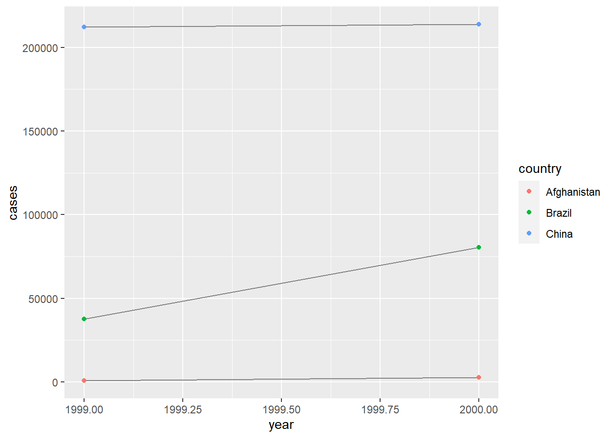
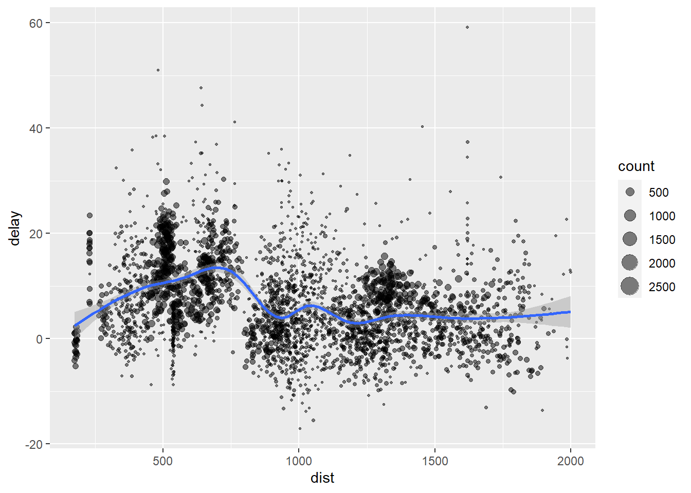

Розділ 3 Лабораторна робота №2. Маніпулювання даними
Мета: Засвоєння принципів, знайомвство з інструментами та набуття навичок манпулювання даними (wrangle) засобами мови програмування R та колекції пакетів tidyverse (Wickham 2021b).
3.1 Що ви будете вміти?
- виконувати імпорт даних з файлів різного формату, включаючи реляційні бази даних засобами мови R у середовищі IDE RStudio.
- обробляти пропущені значення та приводити дані до “охайного” вигляду за допомогою пакету
tidyr(Wickham and Girlich 2022). - маніпулювати даними засобами мови R у середовищі IDE RStudio в парадигмі пакету
dplyr(Wickham et al. 2022) з використанням потокового оператору%>%.
3.2 Короткі теоретичні відомості
3.2.1 Що таке маніпулювання данними?
Wrangle – найважливша задача початкового етапу, мета якої – підготовка даних до аналізу і яка складається з процедур приведення даних до “охайного” вигляду та трансформації: Tidy + Transform = Wrangle. (Garrett Grolemund 2018) (рис. 1). Сюди можна віднести і процедуру імпорту, на етапі якої, власне, і починаються певні трасформації з даними.
Рис. 1. Структура задачі маніпулювання даними у складі Data Science-проекту (Garrett Grolemund 2018)
3.2.2 Імпорт даних
Перша задача імпорту даних (Import) полягає у вилученні необхідних сирих даних з будь-яких джерел (файли, БД, дані з датчиків у реальному часі і т. д.) самого різного формату.
Вхідні дані можуть бути в оному з трьох наступних форматів (прийнято також називати табульованими (Tabular Data) і нетабульованими (Non-Tabular Data)):
- структурованому – у вигляді таблиці з чітко визначеними полями;
- слабоструктурованому – так звані транзакційні дані, в яких проглядається певна структура, але немає чітко визначених полів та їх типів;
- неструктурованому – будь-якому форматі, як правило, це текст довільної структури.
Для імпорту і експорту структурованих даних у середовищі R існує маса інструментів як стандартних, так і у складі спеціалізованих пакетів. Найпростіший варіант, який рекомендується для новачка, – відповідні функції пакету rio (Chan et al. 2018), що використовувався у лаб. роб. №1.
# install_formats() #інсталяція додаткових компонентів пакету rio
library(rio)
df <- data.frame(x = 1:5, y = rnorm(5))
export(df, "data/df_data_frame.txt")
dfImp <- import("data/df_data_frame.txt")
dfImp## x y
## 1 1 -1.0779033
## 2 2 -0.9384943
## 3 3 -1.2040543
## 4 4 1.2950701
## 5 5 0.4104481Пакет працює з файлами широкого спектру форматів і дозволяє виконувати за необхідності конвертацію файлів з одного формату в інший.
data("mtcars") #підключення стандартного набору даних mtcars
# head(mtcars)
export(head(mtcars), "data/mtcars.dta")
convert('data/mtcars.dta', 'data/mtcars.csv')
import("data/mtcars.csv")## mpg cyl disp hp drat wt qsec vs am gear carb
## 1 21.0 6 160 110 3.90 2.620 16.46 0 1 4 4
## 2 21.0 6 160 110 3.90 2.875 17.02 0 1 4 4
## 3 22.8 4 108 93 3.85 2.320 18.61 1 1 4 1
## 4 21.4 6 258 110 3.08 3.215 19.44 1 0 3 1
## 5 18.7 8 360 175 3.15 3.440 17.02 0 0 3 2
## 6 18.1 6 225 105 2.76 3.460 20.22 1 0 3 13.2.2.1 Імпорт з реляційних баз даних
Пакет dplyr (Wickham et al. 2022) забезпечує зручний інтерфейс дял роботи з віддаленими реляційними базами даних. Наразі ці можливості відокремлені в окремий пакет dbplyr (Wickham, Girlich, and Ruiz 2021).
Основна перевага – користувач повністю абстрагується від факту роботи з базою даних, оперуючи тими ж самими командами, що і для роботи з data.frame (див. нижче). dbplyr бере на себе повну відповідальність за роботу з БД, включаючи трансляцію команд на SQL. Хоча, в окремих випадках більш ефективно використовувати безпосередньо SQL!
Для роботи з dbplyr необхідно встановити пакет бекенда DBI. Пакет DBI забезпечує загальний інтерфейс, що дозволяє dbplyr працювати з багатьма різними базами даних, використовуючи один і той самий код. DBI автоматично встановлюється за допомогою dbplyr, але необхідно окремо встановити конкретний бекенд для бази даних, до якої ми хочемо підключитися:
RMySQL(Ooms et al. 2021) підключається доMySQLтаMariaDB;RPostgreSQL(Conway et al. 2021) підключається доPostgresтаRedshift;RSQLite(Müller et al. 2022) вбудовуєSQLite-базу даних;odbc(Hester and Wickham 2021) підключається до багатьох комерційних баз даних через протокол відкритої бази даних;bigrquery(Wickham and Bryan 2021) підключається доGoogle BigQuery.
Для експериментів з базами даних найпростіше почати з SQLite, оскільки все необхідне включено до стандартного пакету R. Нам не потрібно встановлювати що-небудь ще і мати справу з налаштуванням сервера бази даних. Використовувати базу даних SQLite у dplyr дуже просто: достатньо задати шлях і відзначити, що потрібно створити нову БД:
library(dbplyr)
library(dplyr)
library(RSQLite)# my_db <- src_sqlite("data/my_db.sqlite3", create = T)my_db зараз не містить даних, тому ми завантажимо туди дані flights (зі стандартного набору (Wickham 2021a)) з використанням зручної функції copy_to(). Це швидкий і “брудний” спосіб для того, щоб помістити дані в базу даних, але він не підходить для дуже великих наборів даних, оскільки всі дані повинні проходити через R.
library(nycflights13)
# flights_sqlite <- copy_to(my_db, flights, temporary = FALSE,
# indexes = list(c("year", "month", "day"), "carrier", "tailnum"))
# head(flights_sqlite)Нижче показано приклад встановлення з’єднання з існуючою БД через функцію DBConnect, що входить до складу DBI (R Special Interest Group on Databases (R-SIG-DB), Wickham, and Muller 2021).
con <- DBI::dbConnect(RSQLite::SQLite(), path = "data/my_db.sqlite3")
flights_sqlite <- copy_to(con, nycflights13::flights, "flights",
temporary = FALSE,
indexes = list(
c("year", "month", "day"),
"carrier",
"tailnum",
"dest"
)
)
head(flights_sqlite)## # Source: lazy query [?? x 19]
## # Database: sqlite 3.37.2 []
## year month day dep_time sched_dep_time dep_delay arr_time sched_arr_time
## <int> <int> <int> <int> <int> <dbl> <int> <int>
## 1 2013 1 1 517 515 2 830 819
## 2 2013 1 1 533 529 4 850 830
## 3 2013 1 1 542 540 2 923 850
## 4 2013 1 1 544 545 -1 1004 1022
## 5 2013 1 1 554 600 -6 812 837
## 6 2013 1 1 554 558 -4 740 728
## # ... with 11 more variables: arr_delay <dbl>, carrier <chr>, flight <int>,
## # tailnum <chr>, origin <chr>, dest <chr>, air_time <dbl>, distance <dbl>,
## # hour <dbl>, minute <dbl>, time_hour <dbl>DBI::dbDisconnect(con)Для більш детального знайомства доцільно скористатися вищезаначеними посиланнями, та матеріалами проекту RStudio (Wickham, Girlich, and Ruiz 2021), присвяченого роботі з БД в середовищі RStudio, а також російськомовним перекладом Андрія Огурцова документації по dplyr.
При роботі зі слабоструктурованими та неструктурованими файлами, або коли необхідно маніпулювати даними вже на етапі імпорту, можна скористатися потужностями пакету reader (Cooper 2017) для парсингу даних з нетабульованих джерел за допомогою сімейства методів read_*, col_*, parse_*, включаючи рядки (strings), категоріальні змінні (factors), данні типу час-дата (data-time) (див. шпаргалку Data import with readr, readxl, and googlesheets4 cheatsheet), що входить до колекції tidyvers.
3.2.3 Приведення даних до охайного вигляду
3.2.3.1 Що таке “охайні” дані (tidy data)?
Друга і найбільш трудомістка задача (Tidy) – приведення даних до так званого “охайного” вигляду, придатного для аналізу. Як правило мова йде про приведення даних до табличного вигляду “ключ-значення,” або, іншими словами, “об’єкт-ознака.”
Колекція tidyvers будує свою роботу навколо “охайних” даних, збережених у так званих tibbles, що є розширенням типу data.frame. Забезпечується це за допомогою пакету tibble (Müller and Wickham 2021), який предоставляє новий S3 клас для збереження табличних даних. tibbles наслідує клас data.frame і покращує деякі маніпулятивні процедури (див. шпаргалку тут).
Розглянемо інструментарій пакету (Wickham and Girlich 2022), який вхродить до складу tidyvers, використовуючи матеріали з книги (Garrett Grolemund 2018). (Більш детально – див. (Wickham and Girlich 2022), або скорочений переклад російською).
Існує три взаємопов’язані правила, які роблять набір даних “охайним”:
- Кожна змінна містится у окремому полі;
- Кожне спостереження має містится у окремому рядку;
- Значення кожної змінної має міститися в окремій комірці.
Рис. 2. Три взаємопов’язані правила, які роблять набір даних “охайними” (Garrett Grolemund 2018)
Чому доцільно приводити дані до охайного виду? В цьому є дві переваги:
- загальна перевага – такого роду уніфікований вид даних дозволяє ефективно їх зберігати, в тому числі, у реляційній базі даних, і дозволяє маніпулювати їми за допомогою стандартних інструментів;
- специфічна перевага – мова R з точки зору написання ефективного коду передбачає виконання процедури векторизації у всіх випадках, коли це можливо, а це потребує приведення коду до охайного вигляду.
Нижче наведено приклад роботи з таблицею, що має охайний вигляд.
library(tidyverse)# відносний критерій на 10000
table1 %>% # стандартний набір даних
mutate(rate = cases / population * 10000) # обчислення нового поля## # A tibble: 6 x 5
## country year cases population rate
## <chr> <int> <int> <int> <dbl>
## 1 Afghanistan 1999 745 19987071 0.373
## 2 Afghanistan 2000 2666 20595360 1.29
## 3 Brazil 1999 37737 172006362 2.19
## 4 Brazil 2000 80488 174504898 4.61
## 5 China 1999 212258 1272915272 1.67
## 6 China 2000 213766 1280428583 1.67# кількість випадків на рік
table1 %>%
count(year, wt = cases)## # A tibble: 2 x 2
## year n
## <int> <int>
## 1 1999 250740
## 2 2000 296920Потоковий оператор %>% дає можливість спрощувати написання коду. Оператор працює наступним чином: вираз sin(cos(x)) може бути переписаний як x %>% cos() %>% sin().
Нижче наведено приклад сумісного застосування потокового оператору і функцій пакету ggplot2 (Wickham et al. 2021) для візуалізації результатів.
# Візуалізація динаміки зміни кількості випадків з часом
library(ggplot2)
ggplot(table1, aes(year, cases)) +
geom_line(aes(group = country), colour = "grey50") +
geom_point(aes(colour = country))
# table1 %>%
# mutate(rate = cases / population * 10000) %>%
# ggplot(aes(year, rate)) +
# geom_line(aes(group = country), colour = "grey50") +
# geom_point(aes(colour = country))Завдання на самостійну роботу. Побудувати динаміку відносного критерію rate кількості захворювань по роках для кожної держави.
3.2.3.2 Процедури Spreading and Gathering
На практиці найбільш часто зустрічаються два основних типи “неохайності” даних:
- Значення однієї змінної можуть бути розкидані по багатьох стовпчиках;
- Одне спостереження може бути розсіяне по багатьох рядках.
Для вирішення цієї проблеми у складі пакету tidyr існують функції gather()і spread().
3.2.3.2.1 Gathering
Поширеною проблемою є набір даних, де деякі назви стовпців – це не імена змінних, а значення змінної. Візьміть table4a: назви стовпчиків 1999 та 2000 представляють значення змінної року, і кожен рядок містить два спостереження, а не одне.
table4a## # A tibble: 3 x 3
## country `1999` `2000`
## * <chr> <int> <int>
## 1 Afghanistan 745 2666
## 2 Brazil 37737 80488
## 3 China 212258 213766Для розв’язку проблеми необхідно зібрати (gather) необхідні колонки у пару нових змінних (рис. 3).
Рис. 3 Приведення table4 до охайної форми (Garrett Grolemund 2018)
table4a %>%
gather(`1999`, `2000`, key = "year", value = "cases")## # A tibble: 6 x 3
## country year cases
## <chr> <chr> <int>
## 1 Afghanistan 1999 745
## 2 Brazil 1999 37737
## 3 China 1999 212258
## 4 Afghanistan 2000 2666
## 5 Brazil 2000 80488
## 6 China 2000 213766Для комбінування таблиць після приведення їх до охайного вигляду, можна використовувати ліве з’єднання.
tidy4a <- table4a %>%
gather(`1999`, `2000`, key = "year", value = "cases")
tidy4b <- table4b %>%
gather(`1999`, `2000`, key = "year", value = "population")
dplyr::left_join(tidy4a, tidy4b)## Joining, by = c("country", "year")## # A tibble: 6 x 4
## country year cases population
## <chr> <chr> <int> <int>
## 1 Afghanistan 1999 745 19987071
## 2 Brazil 1999 37737 172006362
## 3 China 1999 212258 1272915272
## 4 Afghanistan 2000 2666 20595360
## 5 Brazil 2000 80488 174504898
## 6 China 2000 213766 1280428583Завдання на самостійну роботу. Виконати попереднє завдання, базуючись на таблицях tidy4a і tidy4b з використанням потокового оператора.
3.2.3.2.2 Spreading
Це процедура протилежна збиранню. Поширення, або розтягування (spreading) застосовується, коли спостереження знаходяться в різних рядках (рис. 4).
Рис. 4 Приведення table2 до охайної форми (Garrett Grolemund 2018)
Приклад.
table2## # A tibble: 12 x 4
## country year type count
## <chr> <int> <chr> <int>
## 1 Afghanistan 1999 cases 745
## 2 Afghanistan 1999 population 19987071
## 3 Afghanistan 2000 cases 2666
## 4 Afghanistan 2000 population 20595360
## 5 Brazil 1999 cases 37737
## 6 Brazil 1999 population 172006362
## 7 Brazil 2000 cases 80488
## 8 Brazil 2000 population 174504898
## 9 China 1999 cases 212258
## 10 China 1999 population 1272915272
## 11 China 2000 cases 213766
## 12 China 2000 population 1280428583table2 %>%
spread(key = type, value = count)## # A tibble: 6 x 4
## country year cases population
## <chr> <int> <int> <int>
## 1 Afghanistan 1999 745 19987071
## 2 Afghanistan 2000 2666 20595360
## 3 Brazil 1999 37737 172006362
## 4 Brazil 2000 80488 174504898
## 5 China 1999 212258 1272915272
## 6 China 2000 213766 12804285833.2.3.3 Процедури Separating і Uniting
На практиці може статися випадок, коли в одному стовпчику знаходяться різні змінні. Проблема вирішується шляхом його розділення (separating) на два (див. рис.5).
Рис. 5 Приведення table3 до охайної форми шляхом розділення стовпчиків (Garrett Grolemund 2018)
table3## # A tibble: 6 x 3
## country year rate
## * <chr> <int> <chr>
## 1 Afghanistan 1999 745/19987071
## 2 Afghanistan 2000 2666/20595360
## 3 Brazil 1999 37737/172006362
## 4 Brazil 2000 80488/174504898
## 5 China 1999 212258/1272915272
## 6 China 2000 213766/1280428583table3 %>%
separate(rate, into = c("cases", "population"))## # A tibble: 6 x 4
## country year cases population
## <chr> <int> <chr> <chr>
## 1 Afghanistan 1999 745 19987071
## 2 Afghanistan 2000 2666 20595360
## 3 Brazil 1999 37737 172006362
## 4 Brazil 2000 80488 174504898
## 5 China 1999 212258 1272915272
## 6 China 2000 213766 1280428583Зворотною процедурою до separate() є unite().
table5 %>%
unite(new, century, year, sep = "")## # A tibble: 6 x 3
## country new rate
## <chr> <chr> <chr>
## 1 Afghanistan 1999 745/19987071
## 2 Afghanistan 2000 2666/20595360
## 3 Brazil 1999 37737/172006362
## 4 Brazil 2000 80488/174504898
## 5 China 1999 212258/1272915272
## 6 China 2000 213766/12804285833.2.3.4 Пропущені значення
Пропущені значення (missing value) у наборах даних можуть бути двох видів: явні (позначені як NA, Not Available) і неявні (просто не представлені у даних). Такі дані називаються некомплектні.
Нижче наведено приклад, який це ілюструє.
stocks <- tibble(
year = c(2015, 2015, 2015, 2015, 2016, 2016, 2016),
qtr = c( 1, 2, 3, 4, 2, 3, 4),
return = c(1.88, 0.59, 0.35, NA, 0.92, 0.17, 2.66)
)
stocks## # A tibble: 7 x 3
## year qtr return
## <dbl> <dbl> <dbl>
## 1 2015 1 1.88
## 2 2015 2 0.59
## 3 2015 3 0.35
## 4 2015 4 NA
## 5 2016 2 0.92
## 6 2016 3 0.17
## 7 2016 4 2.66Дані за четвертий квартал 2015 явно відсутні про що свідчить відповідне значення. Дані за перший квартал не внесені у таблицю, тобто відсутні неявно, але відсутність можна помітити після відповідної траснформації.
stocks %>%
spread(year, return)## # A tibble: 4 x 3
## qtr `2015` `2016`
## <dbl> <dbl> <dbl>
## 1 1 1.88 NA
## 2 2 0.59 0.92
## 3 3 0.35 0.17
## 4 4 NA 2.66Виявити множину некомплектних даних можна також з використанням функції complete().
stocks %>%
complete(year, qtr)## # A tibble: 8 x 3
## year qtr return
## <dbl> <dbl> <dbl>
## 1 2015 1 1.88
## 2 2015 2 0.59
## 3 2015 3 0.35
## 4 2015 4 NA
## 5 2016 1 NA
## 6 2016 2 0.92
## 7 2016 3 0.17
## 8 2016 4 2.66Проблема некомплектних даних вирішується двома шляхами: виключенням некомплектних спостережень, або імпутацією пропущених значень іншими значеннями, виходячи з певної моделі.
stocks %>%
spread(year, return) %>%
gather(year, return, `2015`:`2016`, na.rm = TRUE)## # A tibble: 6 x 3
## qtr year return
## <dbl> <chr> <dbl>
## 1 1 2015 1.88
## 2 2 2015 0.59
## 3 3 2015 0.35
## 4 2 2016 0.92
## 5 3 2016 0.17
## 6 4 2016 2.66У випадках, коли це доцільно, можна використовувати функцію fill(), яка заповнює пропущенні значення, взявши значення з останньої заповненої клітинки:
df <- data.frame(Month = 1:12, Year = c(2000, rep(NA, 11)))
df## Month Year
## 1 1 2000
## 2 2 NA
## 3 3 NA
## 4 4 NA
## 5 5 NA
## 6 6 NA
## 7 7 NA
## 8 8 NA
## 9 9 NA
## 10 10 NA
## 11 11 NA
## 12 12 NAdf %>% fill(Year)## Month Year
## 1 1 2000
## 2 2 2000
## 3 3 2000
## 4 4 2000
## 5 5 2000
## 6 6 2000
## 7 7 2000
## 8 8 2000
## 9 9 2000
## 10 10 2000
## 11 11 2000
## 12 12 20003.2.4 Трансформація
Недостатньо привести дані до охайного вигляду. Найбільш важливі процедури візуалізації та моделювання потребують різного роду трансформації охайних даних: вибірки рядків та полів, перейменування та зміну типів даних, обчислення нових значень, різного роду агрегації тощо.
Трансформація (Transform) – друга важлива задача у складі процедури маніпулювання даними.
Середовище R наразі має низку потужних інструментів для цього, які побудовані на схожих концепціях, серед яких одним з найбільш поширених і потужних є пакет dplyr (Wickham et al. 2022) зі своєю, як прийнято говорити у професійних колах, “філософією.”
Наведемо короткий огляд основих команд і прикладів їх застосування згідно з (Wickham et al. 2022).
Як стверджують розробники, dplyr – граматика маніпулювання даними, що забезпечує послідовний набір дієслів, які допомагають вирішити найбільш поширені проблеми з обробкою даних:
mutate()додає нові змінні, які є функціями існуючих змінних.select()вибирає стовпчики (поля таблиці) на основі їх імен.filter()вибирає рядки (спостереження) на основі їх значень.summarise()зменшує декілька значень до одного резюме.arrange()змінює упорядкування рядків.
Усі ці команди об’єднуються природним чином з функцією групування group_by(), яка дозволяє виконувати будь-яку операцію “по групі.” Поряд з даними командами для одинарних таблиць dplyr також надає різноманітні команди для двох таблиць. Для маніпулювання багатьма таблицями викорстовуються засоби пакету purrr (Henry and Wickham 2020) в парадигмі функціонального програмування, який також входить до tidyverse.
Як було зазначено вище, dplyr розроблений для того, щоб абстрагуватися від форми, у якій зберігаються дані. Це означає, що при роботі з локальними таблицями даних і з віддаленими таблицями бази даних використовується один і той же самий код R.
Враховуючи, що більшість команд за своїм сенсом ідентична SQL-командам, з якими студент вже знайомий, наведемо коротко основні приклади їх застосування без зайвих коментарів.
# Вибірка рядків таблиці
library(dplyr)
starwars %>%
filter(species == "Droid")## # A tibble: 6 x 14
## name height mass hair_color skin_color eye_color birth_year sex gender
## <chr> <int> <dbl> <chr> <chr> <chr> <dbl> <chr> <chr>
## 1 C-3PO 167 75 <NA> gold yellow 112 none masculi~
## 2 R2-D2 96 32 <NA> white, blue red 33 none masculi~
## 3 R5-D4 97 32 <NA> white, red red NA none masculi~
## 4 IG-88 200 140 none metal red 15 none masculi~
## 5 R4-P17 96 NA none silver, red red, blue NA none feminine
## 6 BB8 NA NA none none black NA none masculi~
## # ... with 5 more variables: homeworld <chr>, species <chr>, films <list>,
## # vehicles <list>, starships <list># Вибірка полів таблиці
starwars %>%
select(name, ends_with("color"))## # A tibble: 87 x 4
## name hair_color skin_color eye_color
## <chr> <chr> <chr> <chr>
## 1 Luke Skywalker blond fair blue
## 2 C-3PO <NA> gold yellow
## 3 R2-D2 <NA> white, blue red
## 4 Darth Vader none white yellow
## 5 Leia Organa brown light brown
## 6 Owen Lars brown, grey light blue
## 7 Beru Whitesun lars brown light blue
## 8 R5-D4 <NA> white, red red
## 9 Biggs Darklighter black light brown
## 10 Obi-Wan Kenobi auburn, white fair blue-gray
## # ... with 77 more rows# Створення нового поля у таблиці з послідуючою вибіркою
starwars %>%
mutate(name, bmi = mass / ((height / 100) ^ 2)) %>%
select(name:mass, bmi)## # A tibble: 87 x 4
## name height mass bmi
## <chr> <int> <dbl> <dbl>
## 1 Luke Skywalker 172 77 26.0
## 2 C-3PO 167 75 26.9
## 3 R2-D2 96 32 34.7
## 4 Darth Vader 202 136 33.3
## 5 Leia Organa 150 49 21.8
## 6 Owen Lars 178 120 37.9
## 7 Beru Whitesun lars 165 75 27.5
## 8 R5-D4 97 32 34.0
## 9 Biggs Darklighter 183 84 25.1
## 10 Obi-Wan Kenobi 182 77 23.2
## # ... with 77 more rows# Сортування даних
starwars %>%
arrange(desc(mass))## # A tibble: 87 x 14
## name height mass hair_color skin_color eye_color birth_year sex gender
## <chr> <int> <dbl> <chr> <chr> <chr> <dbl> <chr> <chr>
## 1 Jabba D~ 175 1358 <NA> green-tan~ orange 600 herm~ mascu~
## 2 Grievous 216 159 none brown, wh~ green, y~ NA male mascu~
## 3 IG-88 200 140 none metal red 15 none mascu~
## 4 Darth V~ 202 136 none white yellow 41.9 male mascu~
## 5 Tarfful 234 136 brown brown blue NA male mascu~
## 6 Owen La~ 178 120 brown, gr~ light blue 52 male mascu~
## 7 Bossk 190 113 none green red 53 male mascu~
## 8 Chewbac~ 228 112 brown unknown blue 200 male mascu~
## 9 Jek Ton~ 180 110 brown fair blue NA male mascu~
## 10 Dexter ~ 198 102 none brown yellow NA male mascu~
## # ... with 77 more rows, and 5 more variables: homeworld <chr>, species <chr>,
## # films <list>, vehicles <list>, starships <list># Обчислення агрегатів з попереднім групуванням по полю species
starwars %>%
group_by(species) %>%
summarise(
n = n(),
mass = mean(mass, na.rm = TRUE)
) %>%
filter(n > 1)## # A tibble: 9 x 3
## species n mass
## <chr> <int> <dbl>
## 1 Droid 6 69.8
## 2 Gungan 3 74
## 3 Human 35 82.8
## 4 Kaminoan 2 88
## 5 Mirialan 2 53.1
## 6 Twi'lek 2 55
## 7 Wookiee 2 124
## 8 Zabrak 2 80
## 9 <NA> 4 48Окрім tidyr і dplyr існує п’ять пакетів (включаючи stringr і forcats), які призначені для роботи з певними типами даних:
lubridate(Spinu, Grolemund, and Wickham 2021) для даних типу “дата” та “дата-час.”hms(Muller 2021) для даних типу “час доби.”blob[R-blob] для даних, збережених у двійковому (blob) форматі.
Більш детальну інформацію див. у так званих “віньєтках”, або у перекладі російською мовою Андрія Огурцова (Ogurtsov 2022). Також рекомендується “шпаргалка” по командам dplyr від RStudio.
3.3 Приклад виконання індівідуального завдання
3.3.1 Постановка задачі
Створити реляційну БД, використовуючи СУБД SQLite. Виконати експорт даних у БД зі стандартного набору nycflights13 щодо авіаперевезень аеропорту Нью-Йорк за 2013 рік.
Налаштувати індекси: (“year,” “month,” “day”), “carrier,” “tailnum,” “dest.”
Підготувати RMarkdown-документ, який би давав можливість генерувати електронний звіт з результатами виконання наступних задач:
- вибрати поля
year:day,dep_delay,arr_delayз таблиціflights. - вибрати всі рейси з часом затримки (dep_delay) більше ніж 240 хв.
- Обчислити середній час затримки вильоту (dep_time) з попереднім групуванням по відстані авіамаршруту (dest).
- Обчислити для кожного бортового номеру літака з кількістю рейсів більше 100 середній час затримки прибуття та кількість рейсів; дані впорядкувати за убуванням часу затримки прибуття.
- розділити набір даних по літаках і розрахувати кількість вильотів і середню дальність польоту і затримку прибуття; побудувати графік залежності середньої затримки від середньої дальності польоту (за допомогою
ggplot2). - знайти кількість літаків і кількість вильотів в усі можливі пункти призначення.
3.3.2 Виконання завдання
- Створюємо реляційну БД, використовуючи СУБД SQLite.
# my_db <- src_sqlite("data/my_db.sqlite3", create = T)- Під’єднуємось до БД. Виконуємо експорт даних у БД зі стандартного набору
nycflights13щодо авіаперевезень аеропорту Нью-Йорк за 2013 рік. Налаштовуємо індекси: (“year,” “month,” “day”), “carrier,” “tailnum,” “dest.”
con <- DBI::dbConnect(RSQLite::SQLite(), path = "data/my_db.sqlite3")
flights_sqlite <- copy_to(con, nycflights13::flights, "flights",
temporary = FALSE,
indexes = list(
c("year", "month", "day"),
"carrier",
"tailnum",
"dest"
)
)
head(flights_sqlite)## # Source: lazy query [?? x 19]
## # Database: sqlite 3.37.2 []
## year month day dep_time sched_dep_time dep_delay arr_time sched_arr_time
## <int> <int> <int> <int> <int> <dbl> <int> <int>
## 1 2013 1 1 517 515 2 830 819
## 2 2013 1 1 533 529 4 850 830
## 3 2013 1 1 542 540 2 923 850
## 4 2013 1 1 544 545 -1 1004 1022
## 5 2013 1 1 554 600 -6 812 837
## 6 2013 1 1 554 558 -4 740 728
## # ... with 11 more variables: arr_delay <dbl>, carrier <chr>, flight <int>,
## # tailnum <chr>, origin <chr>, dest <chr>, air_time <dbl>, distance <dbl>,
## # hour <dbl>, minute <dbl>, time_hour <dbl>- Виводимо поля
year:day,dep_delay,arr_delayз таблиціflights.
flights_sqlite %>% select(year:day, dep_delay, arr_delay)## # Source: lazy query [?? x 5]
## # Database: sqlite 3.37.2 []
## year month day dep_delay arr_delay
## <int> <int> <int> <dbl> <dbl>
## 1 2013 1 1 2 11
## 2 2013 1 1 4 20
## 3 2013 1 1 2 33
## 4 2013 1 1 -1 -18
## 5 2013 1 1 -6 -25
## 6 2013 1 1 -4 12
## 7 2013 1 1 -5 19
## 8 2013 1 1 -3 -14
## 9 2013 1 1 -3 -8
## 10 2013 1 1 -2 8
## # ... with more rows- Вибираємо всі рейси з часом затримки (dep_delay) більше ніж 240 хв.
flights_sqlite %>% filter(dep_delay > 240)## # Source: lazy query [?? x 19]
## # Database: sqlite 3.37.2 []
## year month day dep_time sched_dep_time dep_delay arr_time sched_arr_time
## <int> <int> <int> <int> <int> <dbl> <int> <int>
## 1 2013 1 1 848 1835 853 1001 1950
## 2 2013 1 1 1815 1325 290 2120 1542
## 3 2013 1 1 1842 1422 260 1958 1535
## 4 2013 1 1 2115 1700 255 2330 1920
## 5 2013 1 1 2205 1720 285 46 2040
## 6 2013 1 1 2343 1724 379 314 1938
## 7 2013 1 2 1332 904 268 1616 1128
## 8 2013 1 2 1412 838 334 1710 1147
## 9 2013 1 2 1607 1030 337 2003 1355
## 10 2013 1 2 2131 1512 379 2340 1741
## # ... with more rows, and 11 more variables: arr_delay <dbl>, carrier <chr>,
## # flight <int>, tailnum <chr>, origin <chr>, dest <chr>, air_time <dbl>,
## # distance <dbl>, hour <dbl>, minute <dbl>, time_hour <dbl>- Обчислюємо середній час затримки вильоту (dep_time) з попереднім групуванням по відстані авіамаршруту (dest).
flights_sqlite %>%
group_by(dest) %>%
summarise(delay = mean(dep_time))## Warning: Missing values are always removed in SQL.
## Use `mean(x, na.rm = TRUE)` to silence this warning
## This warning is displayed only once per session.## # Source: lazy query [?? x 2]
## # Database: sqlite 3.37.2 []
## dest delay
## <chr> <dbl>
## 1 ABQ 2006.
## 2 ACK 1033.
## 3 ALB 1627.
## 4 ANC 1635.
## 5 ATL 1293.
## 6 AUS 1521.
## 7 AVL 1175.
## 8 BDL 1490.
## 9 BGR 1690.
## 10 BHM 1944.
## # ... with more rows- Обчислюємо для кожного бортового номеру літака з кількістю рейсів більше 100 середній час затримки прибуття та кількість рейсів; дані впорядкувати за убуванням часу затримки прибуття.
tailnum_delay_sqlite <- flights_sqlite %>%
group_by(tailnum) %>%
summarise(
delay = mean(arr_delay),
n = n()
) %>%
arrange(desc(delay)) %>%
filter(n > 100)- Розділяємо набір даних по літаках і розрахувати кількість вильотів і середню дальність польоту і затримку прибуття; будуємо графік залежності середньої затримки від середньої дальності польоту (за допомогою
ggplot2).
library(ggplot2)
planes <- group_by(flights, tailnum)
delay <- summarise(planes,
count = n(),
dist = mean(distance, na.rm = TRUE),
delay = mean(arr_delay, na.rm = TRUE))
delay <- filter(delay, count > 20, dist < 2000)
ggplot(delay, aes(dist, delay)) +
geom_point(aes(size = count), alpha = 1/2) +
geom_smooth() +
scale_size_area()## `geom_smooth()` using method = 'gam' and formula 'y ~ s(x, bs = "cs")'## Warning: Removed 1 rows containing non-finite values (stat_smooth).## Warning: Removed 1 rows containing missing values (geom_point).
- Знаходимо кількість літаків і кількість вильотів в усі можливі пункти призначення.
destinations <- group_by(flights, dest)
summarise(destinations,
planes = n_distinct(tailnum),
flights = n()
)## # A tibble: 105 x 3
## dest planes flights
## <chr> <int> <int>
## 1 ABQ 108 254
## 2 ACK 58 265
## 3 ALB 172 439
## 4 ANC 6 8
## 5 ATL 1180 17215
## 6 AUS 993 2439
## 7 AVL 159 275
## 8 BDL 186 443
## 9 BGR 46 375
## 10 BHM 45 297
## # ... with 95 more rowsDBI::dbDisconnect(con)